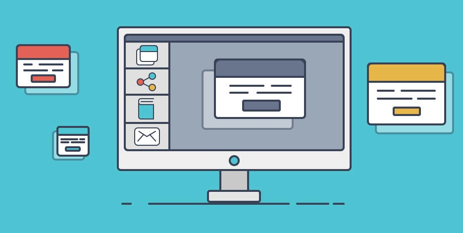
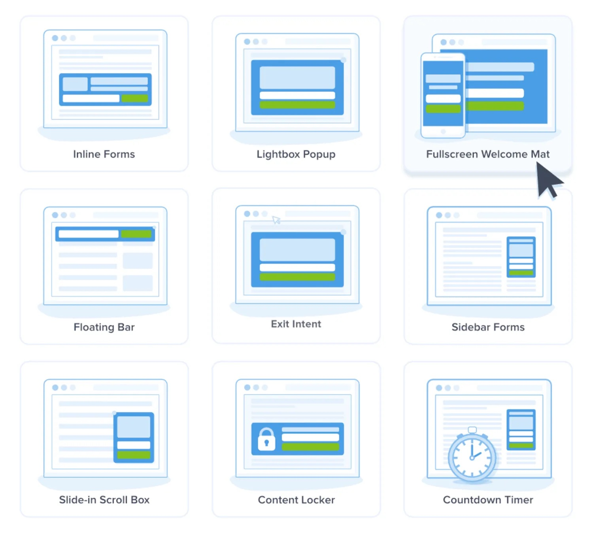

| bonUS |
| |
|

|
The followings are the types of pop-ups categorized into groups, hoping you will find our little bonus of a help to you.
|
|
Types of pop-ups by format
- Hello-boards
- Page-stops
First of all, these two types differ in navigation, size, and the display’s timing, not in design or location.
The pop-ups of these types are displayed immediately or a few seconds after a user visits a website. In some cases, they can even appear before the content of a page fully loads.
Hello-boards are now used more often than page stops. Modern hello-boards are smaller than predecessors, don’t overlay the content of a page and let users decide whether to close a website or continue browsing.
Whereas page-stops mostly attract attention to the content of a window, overlap the page and sometimes are displayed without navigation preventing users from browsing until a target action is completed.
|
|
Types of pop-ups by action
- Entry pop-ups
This type pop ups before a page fully loads or almost right after its content is displayed.
- Click pop-ups
This type is activated when a user clicks a certain link, image, or word. Click pop-ups depend on action and are the least annoying to users. They appear when users want to see them and work gently without any risk to website conversion.
- Sidebar scroll pop-ups
This type of pop-up looks the most natural, thanks to its suitable location and timing. They are displayed when users already have a good grasp of content and probably won’t stop browsing the website because of a pop-up.
- Timed pop-ups
They aren’t so annoying as entry pop-ups. Additionally, they aren’t shown to every user but only to those interested in the corresponding offer.
- Exit pop-ups
The task is to make an attractive offer before a user leaves a website. To do that, website owners often use different bonuses and promise discounts. Such pop-ups are also shown at the cart stage to motivate users to place an order.
|
|
Types of pop-ups by placement
- Header pop-ups
appear at the top of the screen. They can be dynamic and follow the content of a page or static.
- Center pop-ups
The center of the screen is the most common place to display pop-ups. Here they are much more likely to be noticed.
- Sidebar pop-ups
They appear when a user scrolls the corresponding page and look like a small humble window on its left or right side. Scroll pop-ups appear when a user already had enough time to check out most of the page. Therefore, they are relevant to the user path.
- Footer pop-ups
They are pinned at the bottom of a website.
|
|
Types of pop-ups by purpose
- Subscription
They usually consist of a call-to-action, 1-2 fields (name, email), and a button.
- Promo offers, discounts
The standard structure of such pop-ups: a call to action, 1-3 fields (name, phone number, email), and a button.
- Callback
The standard structure: a call to action, 1-2 fields (name, phone), and a button.
- One-click order
The standard structure: a call to action, one field (phone number), and a button.
|
|

TO read mORe ON thIS TOpic
|